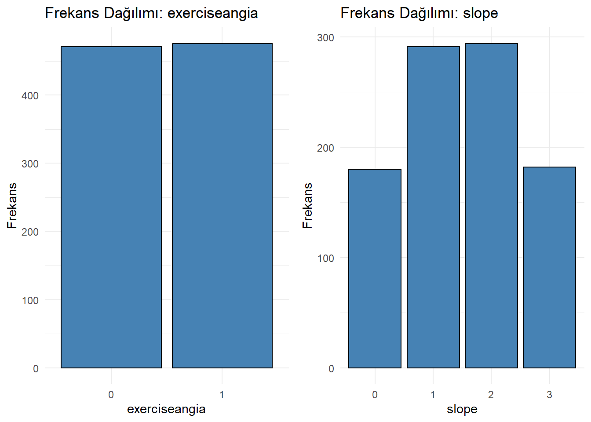

Bu veri seti, Hindistan’daki birçok branşlı hastaneden alınmış olup, 1000 kişinin verilerini içermektedir. Erken aşama kalp hastalığı tespiti amacıyla toplanmıştır. Toplamda 14 farklı değişken içermektedir.
library(readxl)
Warning: package 'readxl' was built under R version 4.3.3
Serumcholestrol değişkeninde 0 değerleri tespit edilmiştir. Bu değerler, hatalı veya eksik gözlemler olarak değerlendirilmiş ve bu nedenle silinmiştir.
Veri temizliği tamamlandı, 947 gözlem ve 14 değişken ile devam edilmiştir.
Sayısal Değişkenlerin Çarpıklık ve Dağılımının İncelenmesi
boxplot(df$restingBP, main ="kan basıncı (mm Hg cinsinden)")
Kutu grafiği, kan basıncının 130 ile 170 mm Hg arasında olduğunu ve medyanın yaklaşık 150 mm Hg olduğunu gösteriyor. Minimum değer yaklaşık 100 mm Hg ve maksimum değer yaklaşık 200 mm Hg’dir.
ggplot(df, aes(x = age)) +geom_histogram(binwidth =0.5, fill ="blue", color ="black") +labs(title ="Histogram", x ="yaş", y ="Gozlem sayısı")
Bu histogram, yaşların 20 ile 80 arasında değiştiğini ve en yoğun gözlemlerin 20 yaş civarında olduğunu gösteriyor. Yaş dağılımı genelde homojen, ancak genç yaşlarda daha yüksek bir yoğunluk var.
Bu yoğunluk grafiği, maksimum kalp hızının 60 ile 200 arasında değiştiğini ve en yoğun aralığın 140-160 civarında olduğunu gösteriyor. Grafikte iki belirgin tepe bulunuyor, bu da farklı grupların varlığını işaret edebilir.
ggplot(df, aes(x = oldpeak)) +geom_histogram(binwidth =0.5, fill ="blue", color ="black") +labs(title ="Egzersiz sonrası ST depresyonu", x ="oldpeak")
Bu grafik, egzersiz sonrası ST depresyonunun çoğunlukla orta seviyelerde olduğunu, ancak bazı durumlarda daha yüksek veya daha düşük değerlerde olduğunu gösteriyor.
bu grafik, kolesterol seviyelerinin çoğunlukla 200 ile 400 arasında olduğunu ve bu aralıkta iki belirgin tepe gösterdiğini, ancak 0 ile 200 ve 400 ile 600 arasında daha az yoğunluk gösterdiğini göstermektedir
age restingBP serumcholestrol maxheartrate oldpeak
0.02296224 0.06475853 0.18442465 -0.23984345 0.29855532
# En çarpık değişkeni bulmamost_skewed <-names(skewness_results)[which.max(abs(skewness_results))]cat("En carpık değişken:", most_skewed, "\n")
En carpık değişken: oldpeak
age: 0.02296 – Bu, yaş değişkeninin normal dağılıma yakın olduğunu gösterir. Çarpıklık değeri çok düşük, bu da simetrik bir dağılımı işaret eder.
restingBP: 0.06476 – İstirahat kan basıncı da benzer şekilde çok düşük bir çarpıklığa sahip, bu da dağılımın simetrik olduğuna işaret eder.
serumcholestrol: 0.18442 – Serum kolesterol seviyesi için çarpıklık biraz daha yüksek, ancak hala oldukça düşük bir değer. Dağılımda hafif bir sağ çarpıklık olabilir.
maxheartrate: -0.23984 – Maksimum kalp hızı değişkeninin çarpıklığı negatif, bu da verinin sağa kıyasla daha çok sola çarpık olduğunu ve yüksek kalp hızı değerlerinin daha az sıklıkta olduğunu gösterebilir.
oldpeak: 0.29856 – Egzersiz sonrası ST depresyonu değişkeni de pozitif çarpıklığa sahip ve bu, verinin sağa çarpık olduğunu, yani düşük değerlerin daha yaygın olduğunu gösterir.
Kategorik değişkenlerin incelenmesi
# Gerekli kütüphanelerlibrary(ggplot2)library(gridExtra) # Birden fazla grafiği düzenlemek için
Warning: package 'gridExtra' was built under R version 4.3.3
# Kategorik değişkenlercategorical_vars <-c("gender", "fastingbloodsugar", "chestpain", "restingrelectro", "exerciseangia", "slope", "noofmajorvessels", "target")# Bar grafiklerini oluştur ve ikili gruplar halinde gösterfor (i inseq(1, length(categorical_vars), by =2)) {# İkişerli grup vars <- categorical_vars[i:min(i +1, length(categorical_vars))]# Grafik oluşturma plots <-lapply(vars, function(var) {ggplot(df, aes_string(x = var)) +geom_bar(fill ="steelblue", color ="black") +labs(title =paste("Frekans Dağılımı:", var), x = var, y ="Frekans") +theme_minimal() })# Grafikleri yan yana düzenlegrid.arrange(grobs = plots, ncol =2)}
Warning: `aes_string()` was deprecated in ggplot2 3.0.0.
ℹ Please use tidy evaluation idioms with `aes()`.
ℹ See also `vignette("ggplot2-in-packages")` for more information.

gender (cinsiyet): Veri kümesi erkek ağırlıklı.
fastingbloodsugar (açlık kan şekeri): Çoğunluğun açlık kan şekeri seviyeleri 120 mg/dl ve altında. 120 mg/dl’nin üzerinde olanlar daha az yaygın.
chestpain (göğüs ağrısı): Tipik angina, diğer göğüs ağrısı türlerine göre daha sık görülüyor. Asemptomatik göğüs ağrısı en az yaygın olanı.
restingelectro (dinlenme EKG’si): Normal dinlenme EKG sonuçları baskın. ST-T dalgası anormallikleri ve sol ventrikül hipertrofisi daha az görülüyor.
exerciseangina (egzersiz anjini): Veri setinde, egzersizle tetiklenen anjina ve egzersizle tetiklenmeyen anjina vakaları neredeyse eşit sayıda dağılmış.
slope (eğim/ST segment eğimi): Yükselen ST segmenti, diğer eğim türlerine göre en yaygın olanı. Yatay eğim ikinci sırada, düşen eğim ise en az yaygın.
noofmajorvessels (floroskopi ile görülen majör damar sayısı): Floroskopi ile tespit edilen majör damar sayısı düşük olan kişiler daha yaygın. Üç damarlı kişiler daha az görülüyor.
target (hedef değişken - kalp hastalığı): Kalp hastalığı olanların sayısı, olmayanlara göre biraz daha fazla, bu da veri kümesinde hafif bir dengesizlik olduğunu gösteriyor.
2) Manova
Multivariate Normality
suppressMessages(library(dplyr))
Warning: package 'dplyr' was built under R version 4.3.3
suppressMessages(library(rstatix))
Warning: package 'rstatix' was built under R version 4.3.3
H0 (Sıfır Hipotezi): age,maxheartrate, serumcholestrol ve restingBP değişkenleri normal dağılmıştır.
H1 (Alternatif Hipotez): age,maxheartrate, serumcholestrol ve restingBP değişkenlerinden en az biri normal dağılmamıştır
Yorum:
Shapiro-Wilk testi sonucunda p-değeri çok düşük ( 0.05442 > 0.05) H0 reddedilemez. Bu da şu anlama gelir:
H0 reddedilemez: age,maxheartrate, serumcholestrol ve restingBP değişkenlerinin normal dağıldığı varsayımını reddetmek için yeterli kanıt olmadığı anlamına gelir.
# A tibble: 1 × 4
statistic p.value parameter method
<dbl> <dbl> <dbl> <chr>
1 101. 3.84e-17 10 Box's M-test for Homogeneity of Covariance Matri…
Hipotezler:
H0 (Sıfır Hipotezi): Gruplara ait kovaryans matrisleri eşittir (homojenlik vardır).
H1 (Alternatif Hipotez): Gruplara ait kovaryans matrisleri eşit değildir (homojenlik yoktur).
Yorum:
p-value = 0.95397, 0.05’ten büyük olduğu için(3.83 × 10⁻¹⁷<0.05=a)H0 reddedilir. Bu durumda, gruplara ait kovaryans matrislerinin eşit olmadığı (homojenlik varsayımının sağlandığı) sonucuna varılır.
Tek Yönlü Manova
restingrelectro(hedef) değişkeninin maxheartrate (maksimum kalp atış hızı), serumcholestrol (serum kolesterol), restingBP (dinlenik kan basıncı) ve age (yaş) üzerindeki etkilerini incelemektedir. Bu analiz, restingrelectro’ın bu sağlık parametreleri üzerindeki çoklu etkilerini değerlendirmeyi amaçlamaktadır.
Warning: package 'car' was built under R version 4.3.3
Zorunlu paket yükleniyor: carData
Warning: package 'carData' was built under R version 4.3.3
Attaching package: 'car'
The following object is masked from 'package:dplyr':
recode
# Modelmodel22 <-glm(restingrelectro ~ restingBP + serumcholestrol + age + maxheartrate, data = df, family =binomial())# VIF vif(model22)
restingBP serumcholestrol age maxheartrate
1.039514 1.037446 1.004514 1.011443
Modeldeki bağımsız değişkenler arasındaki düşük korelasyon (VIF değerleri 1’e yakın) çoklu bağlantı sorununun olmadığını ve restingrelectro bağımlı değişkenin doğru bir şekilde tahmin edilebileceğini gösteriyor.
H0 (Sıfır Hipotezi): restingrelectro değişkeninin bağımlı değişkenler üzerinde anlamlı bir etkisi yoktur.
H1 (Alternatif Hipotezi): restingrelectro değişkeninin bağımlı değişkenler üzerinde anlamlı bir etkisi vardır.
p-değeri ( 1.185e-14) Çok küçük olduğu için ( 1.185e-14 < 0.05=a) , H0 reddedilir. Bu, restingrelectro değişkeninin bağımlı değişkenler üzerinde anlamlı bir etkisi olduğunu güçlü bir şekilde destekler.
library(tidyr)
Warning: package 'tidyr' was built under R version 4.3.3
(p=0.997> 0.05 =a) H0 reddedilemez Gruplar arasında varyanslar eşittir.
maxheartrate:
(p=0.0017< 0.05 =a) H0 reddedilirGruplar arasında varyanslar eşit değildir.
restingBP:
(p=0.0183< 0.05 =a) H0 reddedilirGruplar arasında varyanslar eşit değildir.
serumcholestrol:
(p=0.1469> 0.05 =a) H0 reddedilemez Gruplar arasında varyanslar eşittir.
Test of Between Subjects
summary.aov(manova_df)
Response maxheartrate :
Df Sum Sq Mean Sq F value Pr(>F)
restingrelectro 2 12575 6287.7 5.3386 0.004949 **
Residuals 944 1111820 1177.8
---
Signif. codes: 0 '***' 0.001 '**' 0.01 '*' 0.05 '.' 0.1 ' ' 1
Response serumcholestrol :
Df Sum Sq Mean Sq F value Pr(>F)
restingrelectro 2 449048 224524 18.199 1.757e-08 ***
Residuals 944 11646092 12337
---
Signif. codes: 0 '***' 0.001 '**' 0.01 '*' 0.05 '.' 0.1 ' ' 1
Response restingBP :
Df Sum Sq Mean Sq F value Pr(>F)
restingrelectro 2 42899 21449.6 24.924 2.83e-11 ***
Residuals 944 812415 860.6
---
Signif. codes: 0 '***' 0.001 '**' 0.01 '*' 0.05 '.' 0.1 ' ' 1
Response age :
Df Sum Sq Mean Sq F value Pr(>F)
restingrelectro 2 1547 773.25 2.424 0.08912 .
Residuals 944 301135 319.00
---
Signif. codes: 0 '***' 0.001 '**' 0.01 '*' 0.05 '.' 0.1 ' ' 1
1.maxheartrate (Maksimum Kalp Hızı):
p-değeri: 0.0049
Yorum: p-değeri 0.05’ten küçük (p < 0.05), bu nedenle H₀ hipotezi reddedilir. Yani, “restingrelectro” (kalp hastalığı durumu) ile maksimum kalp hızı arasında anlamlı bir ilişki vardır.
2. serumcholestrol (Serum Kolesterol Seviyesi):
p-değeri: < 1.757e-08
Yorum: p-değeri 0.05’ten küçük (p < 0.05), bu nedenle H₀ hipotezi reddedilir. Yani, “restingrelectro” (kalp hastalığı durumu) ile serum kolesterol seviyesi arasında anlamlı bir ilişki vardır.
3. restingBP (İstirahat Kan Basıncı):
p-değeri: < 2.83e-11
Yorum: p-değeri 0.05’ten küçük (p < 0.05), bu nedenle H₀ hipotezi reddedilir. Yani, “restingrelectro” (kalp hastalığı durumu) ile istirahat kan basıncı arasında anlamlı bir ilişki vardır.
4. age (Yaş):
p-değeri: 0.08912
Yorum: p-değeri 0.05’ten büyük (p > 0.05), bu nedenle H₀ hipotezi reddedilemez. Yani, yaş değişkeninin “restingrelectro” (kalp hastalığı durumu) üzerinde anlamlı bir etkisi yoktur.
H₀ :restingelectro ve chestpain etkileşiminin restingBP, serumcholestrol ve age üzerinde etkisi yoktur.
H₁ :restingelectro ve chestpain etkileşiminin restingBP, serumcholestrol ve age üzerinde etkisi vardır.
p-değeri = 0.00026: H₀ reddedilir, çünkü p-değeri 0.05’ten küçük. Bu, restingelectro ve chestpain arasındaki etkileşimin bağımlı değişkenler üzerinde anlamlı bir etkinin olduğunu gösterir.
## Partial Eta Squared Hesaplamak İçinetasq(df_cift, test="Wilks")
P değerleri tüm değişkenler için 0.05’ten büyük ,exerciseangia (muhtemelen egzersiz anginası durumu) bu değişkenlerin her biri üzerinde anlamlı bir etkiye sahip değildir.
#exerciseangia ve fastingbloodsugar için Etkilesim Grafikleri (Interaction Plots) attach(df)interaction.plot(restingrelectro,chestpain,restingBP, fun=mean, type="l", legend=TRUE,col=1:3, lwd=2)
Etkileşim grafikleri, exerciseangia (egzersize bağlı anjina) ve fastingbloodsugar (açlık kan şekeri) faktörlerinin, yaş ve dinlenik kan basıncı değişkenleri üzerinde etkileşim içinde olduğunu göstermektedir. Yani, bu değişkenler üzerindeki etkileri, bu iki faktörün kombinasyonuna göre değişmektedir. Serum kolesterol için ise, etkileşim oldukça zayıf görünmektedir.
3) PCA(Temel Bileşenler Analizi)
#Korelasyon library(PerformanceAnalytics)
Warning: package 'PerformanceAnalytics' was built under R version 4.3.3
Zorunlu paket yükleniyor: xts
Warning: package 'xts' was built under R version 4.3.3
Zorunlu paket yükleniyor: zoo
Attaching package: 'zoo'
The following objects are masked from 'package:base':
as.Date, as.Date.numeric
######################### Warning from 'xts' package ##########################
# #
# The dplyr lag() function breaks how base R's lag() function is supposed to #
# work, which breaks lag(my_xts). Calls to lag(my_xts) that you type or #
# source() into this session won't work correctly. #
# #
# Use stats::lag() to make sure you're not using dplyr::lag(), or you can add #
# conflictRules('dplyr', exclude = 'lag') to your .Rprofile to stop #
# dplyr from breaking base R's lag() function. #
# #
# Code in packages is not affected. It's protected by R's namespace mechanism #
# Set `options(xts.warn_dplyr_breaks_lag = FALSE)` to suppress this warning. #
# #
###############################################################################
Attaching package: 'xts'
The following objects are masked from 'package:dplyr':
first, last
Attaching package: 'PerformanceAnalytics'
The following object is masked from 'package:gplots':
textplot
The following objects are masked from 'package:e1071':
kurtosis, skewness
The following object is masked from 'package:graphics':
legend
restingBP ve serumcholestrol arasında 0.22’lik pozitif bir korelasyon bulunuyor. Bu ilişki düşük, ancak yine de bir miktar ilişki var.
restingBP ve maxheartrate arasında 0.10’luk zayıf bir ilişki var.
age, oldpeak, ve serumcholestrol arasındaki korelasyonlar oldukça düşük, 0.03 ile 0.5263 arasında değişiyor. Bu, bu değişkenlerin birbirlerinden bağımsız olduklarını gösterir.
serumcholestrol ile oldpeak arasındaki korelasyon -0.02 olarak oldukça düşük, yani bu iki değişken arasında çok az bir ilişki var.
Korelasyon matrisinin determinantı 0.9318 gibi yüksek bir değere sahip olduğu için, veri setindeki değişkenlerin çoğu birbirinden bağımsızdır ve PCA analizi yapılabilir. ancak yinede KBO değerine bakılıp karar verilecektir.
library(psych)
Warning: package 'psych' was built under R version 4.3.3
Attaching package: 'psych'
The following object is masked from 'package:Hmisc':
describe
The following object is masked from 'package:car':
logit
The following objects are masked from 'package:ggplot2':
%+%, alpha
KMO örneklem yeterliliğne göre KMO>0.5 olan değişkenler zayıf ancak kabul edilebilir düzeydedir ancak age ve oldpeak değişkenleri KMO<0.5 kabul edilemez seviyesinde olduklarından dolayı Temel Bileşenler Analize uygun değildir bu yüzden veri setinden çıkarılıp devam edilmiştir.
# 'age' ve 'oldpeak' değişkenlerini çıkararak yeni bir veri seti oluşturuyoruzdf_pca <- df[, !(names(df) %in%c("age", "oldpeak"))]
Bartlett Küresellik Testi
#Bartlett Küresellik Testi(Bartlett's Test of Spherecity) library(psych)cortest.bartlett(cor(df_pca[, c("restingBP", "serumcholestrol", "maxheartrate")])) #Bartlett test
Warning in cortest.bartlett(cor(df_pca[, c("restingBP", "serumcholestrol", : n
not specified, 100 used
maxheartrate için MSA değeri 0.61 olduğu için bu değişken faktör analizine daha uygunken, restingBP ve serumcholestrol için MSA değerleri 0.53 ile biraz daha düşük kalıyor.
Bartlett Küresellik Testi
#Bartlett Küresellik Testi(Bartlett's Test of Spherecity) cortest.bartlett(cor(df_faktor[, c("restingBP", "serumcholestrol", "maxheartrate")]),nrow(df_faktor[, c("restingBP", "serumcholestrol", "maxheartrate")])) #Bartlett test
PC1: restingBP ve serumcholestrol ile yüksek pozitif ilişki (0.731 ve 0.723) gösteriyor. Bu, bu iki değişkenin bir arada hareket ettiğini ve birincil bileşenin bu iki değişkeni temsil ettiğini gösteriyor.
PC2: restingBP negatif yük (–0.630) ile maxheartrate yüksek pozitif yük (0.880) ile ilişkilendirilmiş. Bu, PC2’nin bu iki değişkenin zıt yönlerde hareket ettiğini gösteriyor.
PC3: serumcholestrol ile pozitif bir ilişki (0.617) var. Diğer değişkenlerle çok güçlü bir ilişki göstermiyor, bu da üçüncü bileşenin daha düşük varyans açıklamasına neden oluyor.
fa.diagram(fa_kokl)
PC1, hem restingBP (0.7) hem de serumcholestrol (0.7) tarafından orta düzeyde etkilenmektedir.
PC2, öncelikle maxheartrate (0.9) tarafından yüklenmiştir.
restingBP, temel olarak PC1 ekseni boyunca hizalanmıştır.
serumcholestrol ve maxheartrate değişkenlerinin yük vektörleri PC1 ve PC2 eksenleri arasında yer almaktadır.
PC3 üzerine güçlü bir şekilde yüklenen bir değişken yoktur, bu da bu bileşenin çok az varyansı açıkladığını doğrular.
5) Lineer Diskriminant Analizi
Bu analizde, bağımsız değişkenler olarak “restingBP”, “age”, “serumcholestrol” ve “maxheartrate”, bağımlı değişken olarak ise “target” kullanılmıştır. Korelasyon analizi yapılarak, bağımsız değişkenler arasındaki ilişkiler incelenmiştir. Ayrıca, verinin normalliği kontrol edilerek, verilerin normal dağılıma uygun olduğu kararı verilmiştir.
Korelasyon ve normallık incelemeleri
# 'target' dahil, ancak sadece diğer değişkenlerin korelasyonuna bakmadf_dis <- df[, c("restingBP", "age", "serumcholestrol", "maxheartrate", "target")]# Korelasyon hesaplama (Spearman yöntemiyle), sadece ilk dört sütuncor_matrix <-cor(df_dis[,-ncol(df_dis)], method ="spearman")# Korelasyon matrisini görselleştirmelibrary(corrplot)corrplot(cor_matrix, method ="number")
Görseldeki korelasyon analizine göre, değişkenler arasında belirgin güçlü bir ilişki gözlemlenmemektedir. Bu, çoklu bağlantı (multicollinearity) sorununun olmadığı ve dolayısıyla analizlere devam edilebileceği anlamına gelmektedir.
# plotslibrary(MASS)ldahist(lda_pred$x, g = df_dis$target)
group 0 için :
Bu histogramda verilerin büyük çoğunluğunun -2 ile 1 aralığında ve biraz daha çok -1 ile 0 arasında yoğunlaştığı görülüyor. Ayrıca, histogramın sağ tarafında küçük bir grup daha var.
group 1 için:
Verilerin büyük çoğunluğu -1 ile 2 aralığında ve özellikle 0 ile 1 aralığında yoğunlaşmış durumda.
model 0 sınıfı için 303 doğru tahmin yaparken, 117 yanlış tahmin yapmış. 1 sınıfı için ise 426 doğru tahmin yaparken, 101 yanlış tahmin yapmış. Bu sonuç, modelin her iki sınıfı da oldukça iyi ayırt ettiğini gösteriyor.
H₀ (Null Hipotezi): İncelenen bağımsız değişkenlerin, bağımlı değişken üzerinde anlamlı bir etkisi yoktur.
H₁ (Alternatif Hipotez): Bağımsız değişkenlerin, bağımlı değişken üzerinde anlamlı bir etkisi vardır.
p değeri =7.54e-57< 0.05 H0 Red : Bu, restingBP değişkeninin gruplar arasında anlamlı farklar yarattığını gösteriyor.
p değeri = 3.02e-77 < 0.05 H₀Red: Bu, serumcholestrol değişkeninin gruplar arasında anlamlı farklar yarattığını gösteriyor.
p değeri = 6.67e-84 < 0.05 H₀Red: Bu, maxheartrate değişkeninin gruplar arasında anlamlı farklar yarattığını gösteriyor.
Wilks’ Lambda yorumu :
Wilks’ Lambda değeri maxheartrate için en düşük olan değere sahip, yani 0.6624373. Bu, maxheartrate değişkeninin gruplar arasındaki ayrımda en kuvvetli ve en anlamlı değişken olduğunu gösteriyor.
6) Kümeleme Analizi
library(haven)library(dendextend) # dendrogram lara arti ozellikler getirir
Warning: package 'dendextend' was built under R version 4.3.3
---------------------
Welcome to dendextend version 1.19.0
Type citation('dendextend') for how to cite the package.
Type browseVignettes(package = 'dendextend') for the package vignette.
The github page is: https://github.com/talgalili/dendextend/
Suggestions and bug-reports can be submitted at: https://github.com/talgalili/dendextend/issues
You may ask questions at stackoverflow, use the r and dendextend tags:
https://stackoverflow.com/questions/tagged/dendextend
To suppress this message use: suppressPackageStartupMessages(library(dendextend))
---------------------
Attaching package: 'dendextend'
The following object is masked from 'package:stats':
cutree
Warning in plot_confusion_matrix(cfm, target_col = "target", prediction_col =
"prediction", : 'ggimage' is missing. Will not plot arrows and zero-shading.
Warning in plot_confusion_matrix(cfm, target_col = "target", prediction_col =
"prediction", : 'rsvg' is missing. Will not plot arrows and zero-shading.
#Stepwise Yöntemler ile Lojistik RegresyonsuppressMessages(library(MASS))step_model<-step(model_target,direction="both") #direction=c("backward","forward","both")